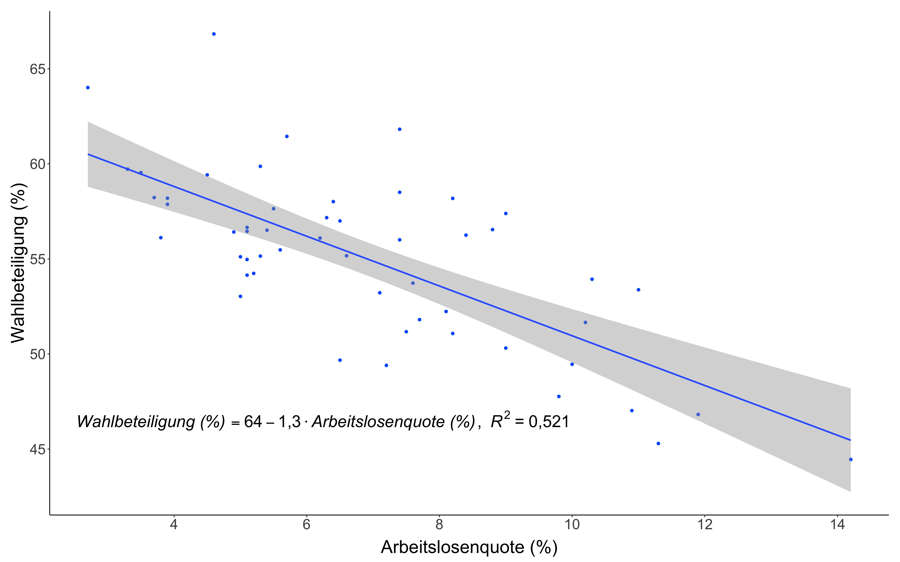
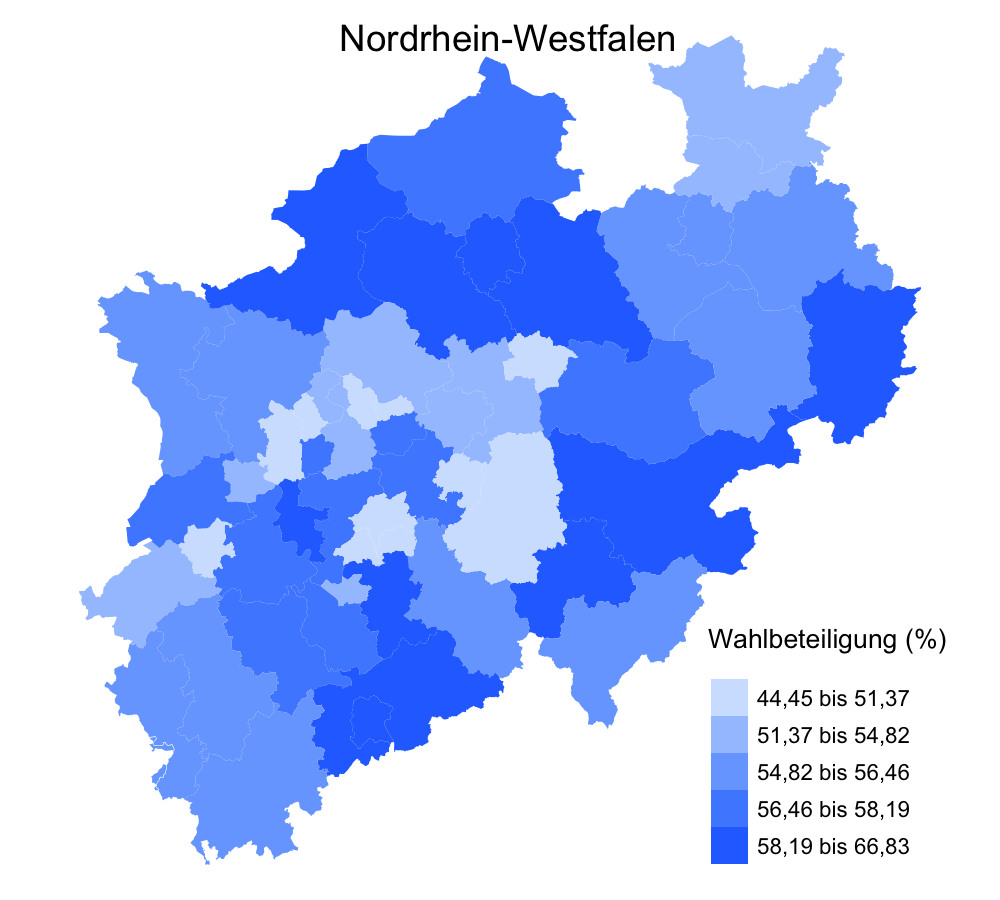

Florian Caro

Hi there! I'm currently a PhD student in the Yale Department of Economics.
In some of my recent work, I build novel datasets to answer questions from the fields of political economy, labor economics, and economic history. My recent work is on subjective well-being and political representation, sorting among research assistants and principal investigators, and Japan's modernization under the Meiji government (1868-1912).
Contact Info:
Email: florian.caro [at] yale.edu
[LinkedIn]
[GitHub]
Work in Progress
Snob Appeal - with Guillermo Carranza Jordan, Valerie Michelman, and Seth Zimmerman
Research Assistants, Sorting, and Career Outcomes: Evidence from the NBER Working Paper Series
Research assistant (RA) positions play an increasingly important role in the economics profession, both for generating research and for nascent researchers to acquire skills, gather experience, and build professional networks. Despite this, we know little about the demographics of RAs, access to RA positions, and the impact of RA experience on downstream career outcomes. Using an original dataset on RAs collected from the acknowledgments of working papers published by the National Bureau of Economic Research, I (i) present novel, large-scale descriptive evidence on RAs, (ii) show that there exist strong sorting patterns between RAs and supervisors (PIs) along gender, race, and ethnicity, and (iii) provide evidence that gender alignment between RAs and PIs has a meaningful impact on the career outcomes of RAs.
Skilled-Worker Immigration, Technology Transfers, and Technological Progress: Evidence from Meiji Japan
I create a novel dataset to investigate the effect of the Japanese government's large-scale hiring of foreign experts in the second half of the 19th century on the country's technological and economic development.
Are Republicans Happier than Democrats? Party-in-Power and Subjective Well-Being - with Fabian Kosse and Jérôme Schäfer
In many surveys, Republicans report higher levels of happiness than Democrats. Yet, it remains unclear whether conservatives systematically put a more positive spin on their lives than their liberal counterparts. We contribute leveraging advances in the measurement of subjective well-being (SWB) and a unique collection of 1.7 million survey responses spanning more than a decade. First, we provide descriptive evidence that the ``partisan happiness gap'' varies over time and narrows, or even reverses, when the President is a Democrat. Second, we confirm that, conditional-on-observables, Republicans tend to be somewhat happier than Democrats. However, we show that individual differences in SWB also depend on which party controls the White House. The role of party-in-power is greater when analyzing expectations about future SWB rather than current SWB. Together, our results provide novel evidence that substantive representation and SWB should be linked, thus strengthening the case for using ``happiness'' data in political analyses. (Manuscript available on request)
Policy Work
Der Zusammenang von Wahlbeteiligung und Einkommen: Eine Analyse der Landtagswahlen in Schleswig-Holstein und Nordrhein-Westfalen 2022 - with Jérôme Schäfer (2022)
Technical report prepared on request by Stiftung Grundeinkommen (now called Zentrum für neue Sozialpolitik) investigating the correlation of unemployment rates and per capita income with election turnout in German state elections.
Der Zusammenang von Wahlbeteiligung und Einkommen: Eine Analyse der Landtagswahl 2018 und der Bundestagswahl 2021 in Bayern - with Jérôme Schäfer (2022)
Technical report prepared on request by Stiftung Grundeinkommen (now called Zentrum für neue Sozialpolitik) investigating the correlation of unemployment rates and per capita income with election turnout in German state elections.